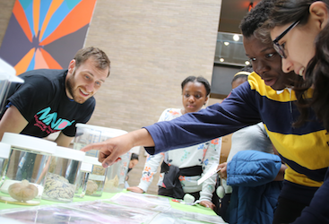

Community Outreach & Education
The brain is arguably the most complex organ. Its primary function is to direct behavior, and it determines the most appropriate behavior, either consciously or unconsciously, by integrating sensory inputs. It accomplishes this through a complex network of cells, that communicate electrically and electrochemically, to produce discrete, yet dynamic circuits. Therefore, as evidence of the brain's complexity, this organ is the physical substrate of the mind and gives rise to personality.
Although the brain is incredibly complicated, it is important for people from all walks of life to understand of the brain and the nervous system, since keeping a healthy brain is an essential component of maintaining a healthy lifestyle.


Icahn School of Medicine at Mount Sinai, New York. As a member of the Mentoring in Neuroscience Discovery (MiNDS), formerly known as the Student Neuroscience Outreach Program (SNOP), I particpated in several community-based outreach programs. For instance, I worked with members to teach middler-schoolers about the body's five sensory systems and used interactive techniques--such as measuring the retinal blindspot and taste-testing jelly beans--as part of my approach.
Binghamton University, New York. The Neuroscience Club at Binghamton University, starting in 2009, developed campus- and community-wide programs during Brain Awareness Week (BAW) to promote nervous system education, and ways to keep a healthy brain and healthy body. Annually, every March, BAW is week-long international campaign sponsored by the the Dana Foundation and the Society for Neuroscience.